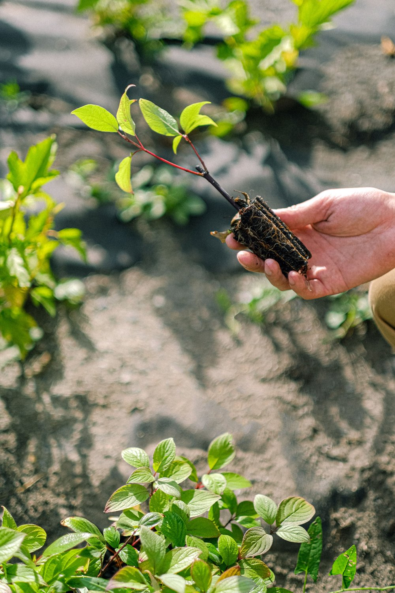
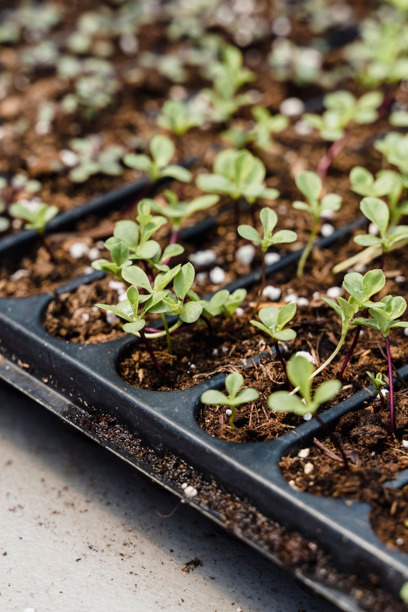
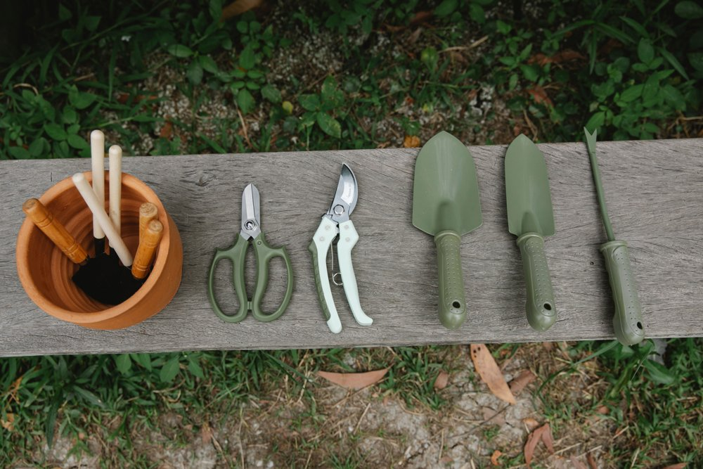

🌱
Озеленяем
Высаживаем растения, ухаживаем за ними и составляем простые планы для дворовых территорий.
Объединяем студентов, соседей и инициативы, чтобы возвращать зелень во дворы, на крыши и в университетскую среду.
«Городской сад» — открытое сообщество для тех, кто хочет учиться, действовать руками и видеть результат рядом с домом. Мы проводим посадки, собираем идеи и поддерживаем локальные команды.
«Не ждать идеального парка, а начать с клумбы у своего подъезда».
Можно прийти на одну встречу или развивать собственную идею вместе с командой — специальных навыков не требуется.
Высаживаем растения, ухаживаем за ними и составляем простые планы для дворовых территорий.
Собираем идеи жителей, делаем понятные схемы и ищем экологичные решения для района.
Разбираемся в городском садоводстве, компостировании и бережном отношении к среде.
Три простых шага: подготовить инвентарь, вырастить рассаду и бережно посадить растение.



Иллюстративные фотографии: Anna Shvets, Greta Hoffman, Gary Barnes / Pexels.
Выбирайте событие по душе. Перед встречей мы отправим напоминание и список того, что пригодится.
11:00 · Московский район · перчатки и инвентарь дадим на месте
18:30 · аудитория 402 · для новичков
14:00 · коворкинг · принесите фотографии своего двора
Оставьте контакт — координатор напишет вам о ближайшей встрече. Это демонстрационная форма: данные не отправляются.
Подходит, если вы:
хотите познакомиться с единомышленниками;
ищете практический эко-проект;
готовы выделить пару часов в месяц.